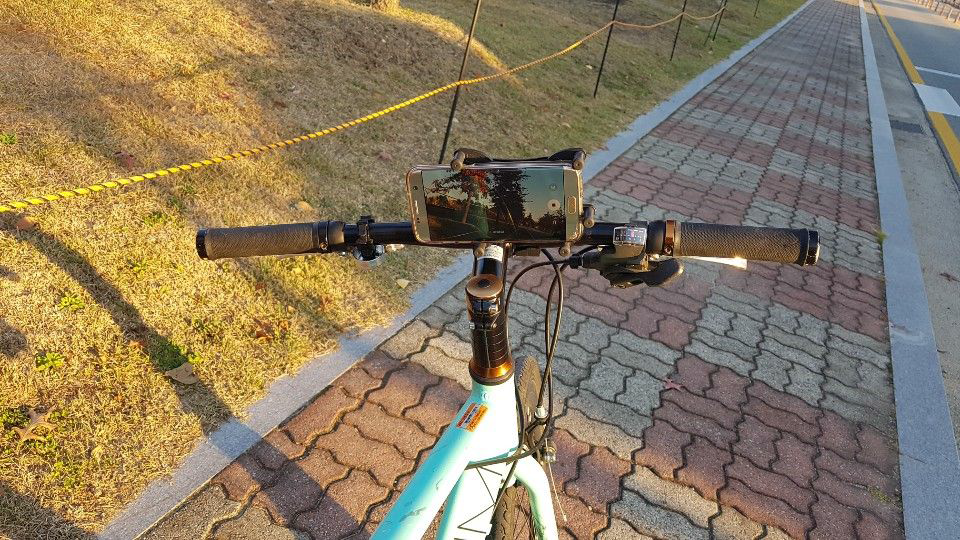
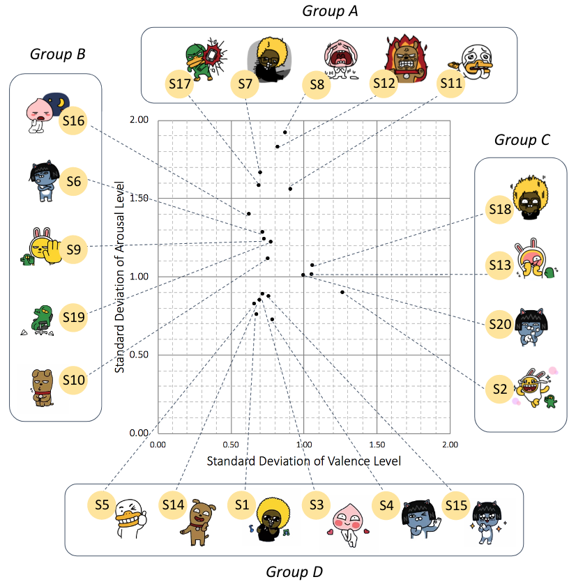
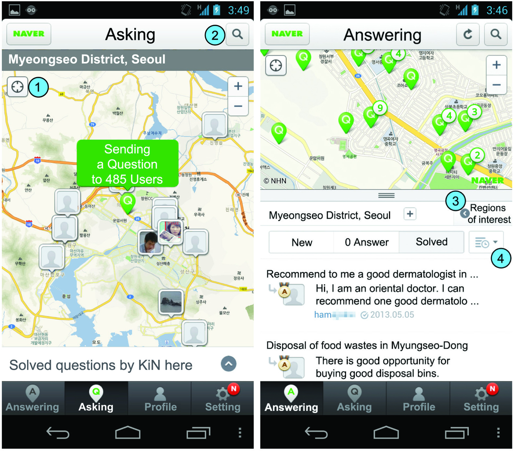
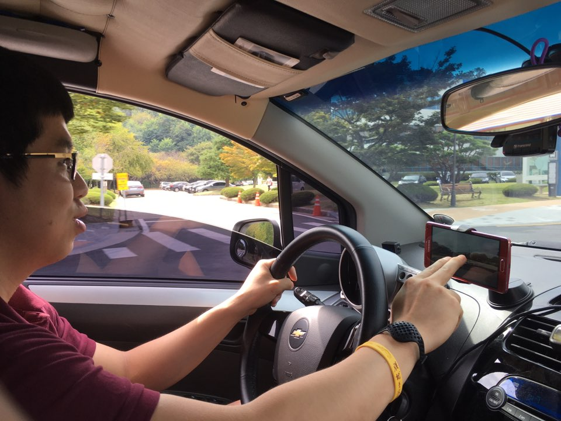
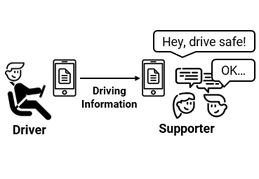
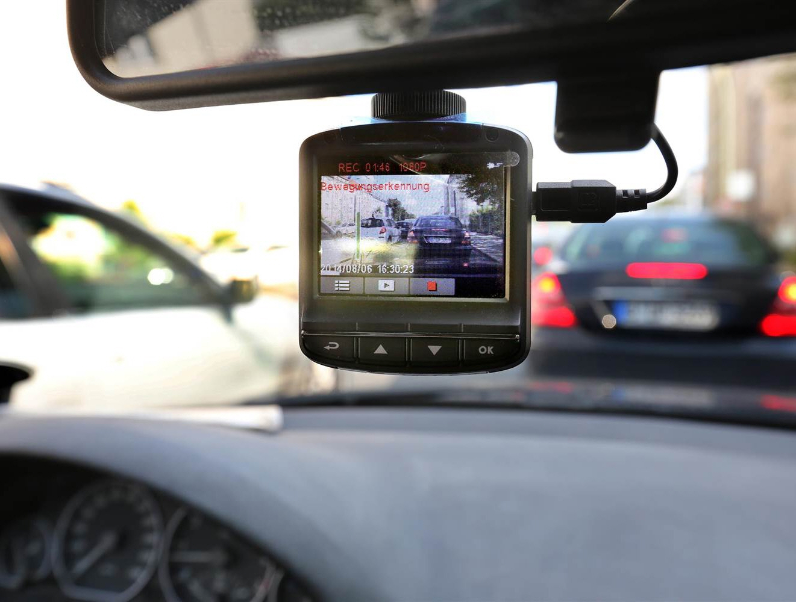
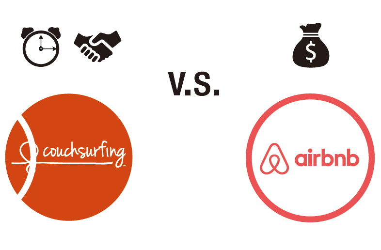
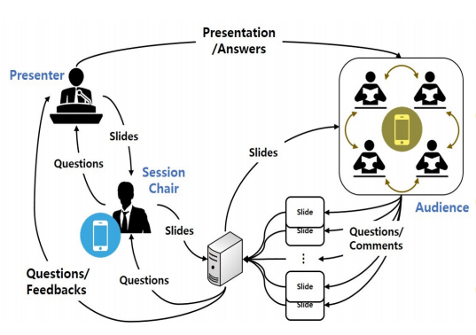
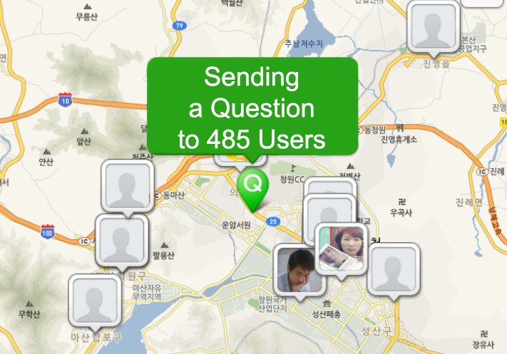

RESEARCH INTEREST
I am currently a postdoctoral researcher working with a Professor Uichin Lee in Interactive Computing LAB at KAIST, South Korea. I earned my Ph.D. in the Graduate School of Knowledge Service Engineering at KAIST in 2019, advised by Uichin Lee. My research interests span across various areas of Human-Computer Interaction (HCI) and Social Computing. Specifically, I am interested in understanding, designing, and evaluating crowd-sourced services with crowd-sensing technology.
HOBBY
I am really interested in physical activities. I like many sports such as weight training, swimming, and Brazilian jiu-jitsu. I have a body building trainer license which is approved by Ministry of Culture, Sports, and Tourism of South Korea in 2016. I enjoy going to the gym, swimming, and Brazilian jiu-jitsu (blue belt).
CONTACT INFO
e-mail: sk.park (at) kaist.ac.kr
FITNESS 💪
- 2016. Sport instructor 2nd-level license for Bodybuilding, Certificated by Ministry of Culture, Sports, and Tourism of South Korea
ROWING 🚣
- 2018. 🥇 First place in 2,000m Individual Division, 12th Indoor Rowing Competition, KAIST
- 2018. 🥉 Second place in 1,200m Individual Division, 12th Indoor Rowing Competition, KAIST
- 2016. 🥇 First place in 2,000m Individual Division, 10th Indoor Rowing Competition, KAIST
- 2016. 🥉 Second place in 1,000m Team Division, 10th Indoor Rowing Competition, KAIST
- 2015. 🥇 First place in 1,000m Team Division, 9th Indoor Rowing Competition, KAIST
- 2015. Fifth place in 2,000m Individual Division, 9th Indoor Rowing Competition, KAIST
- 2014. 🥉 Second place in 2,000m Individual Division, 8th Indoor Rowing Competition, KAIST
BRAZILIAN JIU-JITSU 🥋
- 2018. promoted to Blue belt
- 2018. 🥇 First place in the White Belt Masters 1 -94kg Division, Real Jiu-jitsu Open Competition 2018, Jeonju City
- 2018. promoted to 4th stripe at White belt
- 2017. promoted to 3rd stripe at White belt
- 2016. promoted to 2nd stripe at White belt
- 2016. Lost in first round (Division of White Belt Master 1 -82kg), Jiu-Jitsu Competition, Daejeon City
- 2016. promoted to 1st stripe at white belt
- 2016. Lost in first round (Division of White Belt Master 1 -82kg), Jiu-Jitsu Competition, Cheongju City
SWIMMING 🏊
- 2014. 🏅 Went the distance in 1km Division, 3th General Isabu Sea Swimming Competition, Samcheok City
- 2012. 🏅 Went the distance in 3.3km Division, 3th Jo O-ryeon Sea Swimming Competition, Haenam City
- 2012. 🥉 Third place in Back-stroke Division, TJB Masters Swimming Competition, Daejeon City
EDUCATION
- 2019 - now. Postdoctoral Researcher in Industrial Management Research Center, KAIST, South Korea.
- 2014 - 2019. PhD Candidate in the Graduate School of Knowledge Service Engineering, KAIST, South Korea.
- 2012. 02 - 2014. 02. MS in Knowledge Service Engineering, KAIST, South Korea.
- 2004. 02 - 2012. 02. BS in Computer Science (Graduated with the highest honor), Gyeongsang National University, South Korea
- 2005. 04 - 2007. 04. The South Korea Military (discharged as a sergeant)
ACADEMIC VOLUNTEERING
I have volunteered to several research communities over the years as follows:
- Web Chair of ACM SIGCHI Local Chapter Korea (2018 - present)
- Program Committee
- ACM GROUP 2020
- Reviewer
- ACM UIST 2019
- ACM/IEEE HRI 2019
- ACM CHI 2019
- ACM IMWUT(Ubicomp) 2018, 2019
- ACM MobileHCI 2018, 2019
- ACM CSCW 2018, 2019
- ACM DIS 2018, 2019
- Student Volunteer
- ACM MobileHCI 2014
LEADERSHIP VOLUNTEERING
I have led a couple of communities over the years as follows:
- 2017.03 - 2018.08. A Student Representative of Hwaam Dormitory (for about 200 students),,
Graduate Student Dormitory Council, KAIST
- Recognized as an outstanding student representative
- 2014.03 - 2015.02. A Student Representative of Graduate School of Knowledge Service Engineering, KAIST
JOURNAL & CONFERENCE PAPERS |
|
Multi-Stage Receptivity Model for Mobile Just-In-Time Health InterventionUBICOMP 2019 PDF DOI2019. Journal Proceedings of the ACM on Interactive, Mobile, Wearable and Ubiquitous Technologies (IMWUT) Vol 3, Issue 2, Article No. 39 (June 2019). ACM Woohyeok Choi, Sangkeun Park, Duyeon Kim, Youn-kyung Lim, Uichin Lee. |
|
CampusWatch: Exploring Communitysourced Patrolling with Pervasive Mobile TechnologyCSCW 2018 PDF DOI2018. Journal Proceedings of the ACM on Human-Computer Interaction (PACMHCI) Vol.2, Issue CSCW, Article No. 134 (November 2018). ACM Sangkeun Park, Sujin Kwon, Uichin Lee. |
 |
Complex and Ambiguous: Understanding Sticker Misinterpretations in Instant MessagingCSCW 2018 PDF DOI2018. Journal Proceedings of the ACM on Human-Computer Interaction (PACMHCI) Vol.2, Issue CSCW, Article No. 30 (November 2018). ACM Yoonjeong Cha, Jongwon Kim, Sangkeun Park, Mun Yong Yi, Uichin Lee. |
 |
Localness of Location-based Knowledge Sharing: A Study of Naver KiN 'Here'TWEB PDF DOI2018. ACM Transactions on the Web (TWEB) Volume 12, Issue 3, Article No. 16 (July 2018) Sangkeun Park, Mark S. Ackerman, Uichin Lee. |
 |
Facilitating Pervasive Community Policing on the Road with Mobile RoadwatchCHI 2017 PDF DOI2017. Proceedings of the SIGCHI Conference on Human Factors in Computing Systems (CHI ’17) Sangkeun Park, Emilia-Stefania Ilincai, Jeungmin Oh, Sujin Kwon, Rabeb Mizouni, Uichin Lee. |
 |
WatchOut: Facilitating Safe Driving Behaviors with Social SupportCHI 2017 (EA) PDF DOI POSTER VIDEO2017. Proceedings of the 2017 CHI Conference Extended Abstracts on Human Factors in Computing Systems Hyojin Chin, Hengameh Zabihi, Sangkeun Park, Mun Yong Yi, Uichin Lee. |
 |
Motives and Concerns of Dashcam Video SharingCHI 2016 PDF DOI VIDEO2016. Proceedings of the SIGCHI Conference on Human Factors in Computing Systems (CHI ’16) Sangkeun Park, Joohyun Kim, Rebab Mizouni, Uichin Lee. |
 |
Social or Financial Goals? Comparative Analysis of User Behaviors in Couchsurfing and AirbnbCHI 2016 (EA) PDF DOI POSTER2016. Proceedings of the 2016 CHI Conference Extended Abstracts on Human Factors in Computing Systems Jiwon Jung, Suski Yoon, SeungHyun Kim, Sangkeun Park, Kun-Pyo Lee, Uichin Lee. |
 |
SlideQA: Supporting Effective Q&A in an Offline Academic PresentationCHI 2016 (EA) PDF DOI POSTER2016. Proceedings of the 2016 CHI Conference Extended Abstracts on Human Factors in Computing Systems Juyoun Kim, Yoochan Kim, Sangkeun Park, Uichin Lee. |
 |
Understanding Localness of Knowledge SharingMobileHCI 2014 PDF DOI2014. Proceedings of the ACM International Conference on Human-computer Interaction with Mobile Devices & Services (MobileHCI '14) Sangkeun Park, Yongsung Kim, Mark S. Ackerman, Uichin Lee. |
 |
KOREAN PUBLICATIONS |
On Campus Dashcam Video Sharing Support System Design for Security EnhancementHCI 2016 PDF DBpiaHCI Korea 2016 (Extended Abstract) Juhyun Kim, Sangkeun Park, Uichin Lee, Rabeb Mizouni. |
Analysis of Graduate Students’ Research Related Q&A Behavior in Campus with Activity Theory, and its System Design ImplicationsHCIK 2015 PDF DBpiaHCI Korea 2015 (Extended Abstract) Taehwa Oh, Sangkeun Park, Uichin Lee, Wanchul Yoon. |
Word Sense Disambiguation using Dynamic Sized Window and Frequency WeightingKCC 2014 PDF DBpiaKorea Computer Congress 2014 Sangkeun Park, Jeeyeon Choi, Key-Sun Choi. |
KAIST Scholar
Flask (Python web framework), MySQL, HTML/CSS/JS.
KAIST Scholar is a search engine for KAIST students to help find labs based on professors' research papers. It provides collaboration network across professors at KAIST.
SIGCHI Korea Local Chapter 2018 Spring Academic Workshop
HTML/CSS/JS
ACM SIGCHI organizes leading HCI conferences including ACM CHI, Ubicomp, UIST, and CSCW. As of 2018, SGICHI’s Korea Local Chapter has started organizing several local activities to increase the participation of researchers in SIGCHI activities. As I am a web chiar of Korea Local Chapter, I made this website to advertise the workshop
SIGCHI Local Chapter Korea
Flask (Python web framework), MySQL, HTML/CSS/JS.
As a ACM SIGCHI local chapter korea web chair, I built an official website for it alone.
KSE the Genius 2016
http://research.kaist.ac.kr/ (out of service)
Flask (Python web framework), SQLite Database, HTML/CSS/JS
This website was made for freshmen students of the graduation school of Knowledge Service Engineering to help them understand of the school.
Pylatte
https://pypi.org/project/Pylatte/
Python3
A Web Framework Based on Python 3 Pylatte is a web framework created specifically for Python 3. Developers can now generate websites with Pylatte in Python 3
2D to 3D converter
C#, .NET framework, OpenGL
This software helps a designer draw 3D objects by converting 2D objects to 3D objects using automatic conversion algorithm.
CALL FOR POSITIONS
I am a sixth year PhD candidate. I am looking for job/post-doc opportunities
Now I already defended my PhD dissertation but the official graduation day will be August 2019.
You can see my up-to-date CV here: [Google doc for my CV]
Please feel free to contact me: sk.park (at) kaist.ac.kr